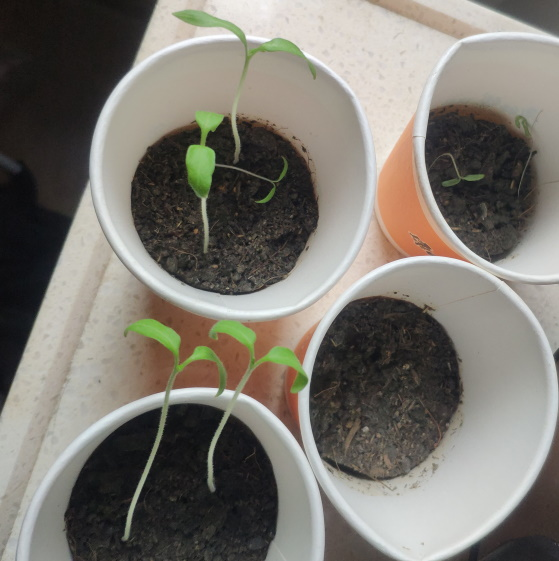

——雨氏种植业，正式启航！
你看，这不巧了么，刚好想种点什么。
决定就是你了，凶柿！
于是，我买了花盆泥土种子，准备大干一场。
开个番外记录以下吧。
至于拍照，记得就拍。
23/2/24下午四时，用稀释100倍的双氧水，温水45°浸泡两个多小时之后，种下种子，桃太郎，恶魔橄榄，各四颗。
23/3/2，种子发芽了，由于种子大小的缘故，目前来说桃太郎长得快，恶魔橄榄刚露头。
23/3/5，奇特地，只有两株恶魔橄榄发芽了，桃太郎发芽了全发芽了（四株），并且看起来长势良好，继续等待，等待其长出真子叶。
23/3/10，并无太大变化，依旧没有长出真子叶。
23/3/20，恶魔橄榄苗宣告死亡，只留下了四株桃太郎，正在尝试长出真子叶。
